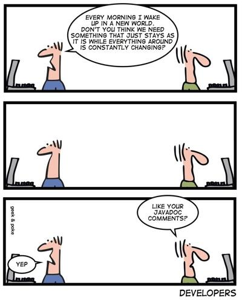

Die WebTech Conference beleuchtet eine Fülle technischer und methodischer Konzepte, die für den Erfolg im Web
heute von großer Bedeutung sind. Neben ihrer Kompetenz für Responsive Webdesign (mit HTML5) und JavaScript
steht die Konferenz auch für moderne Architektur- und Methodenthemen
wie agile Vorgehensweisen, Continuous Delivery und DevOps.
Sämtliche Themen werden von mehr als 60 erfahrenen Speakern vorgetragen, die ihr Wissen an die Teilnehmer
weitergeben und bei zahlreichen Networking-Gelegenheiten für Dialog und Diskussion zur Verfügung stehen.
